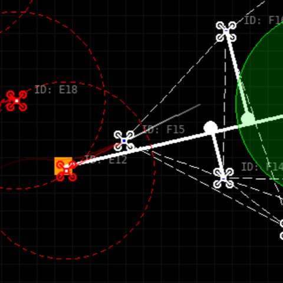
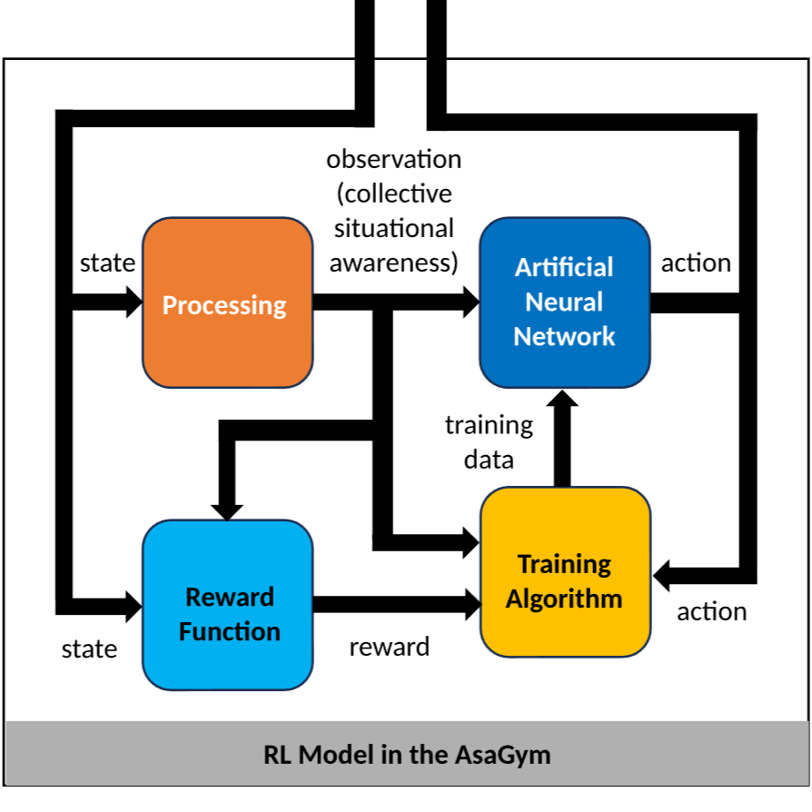
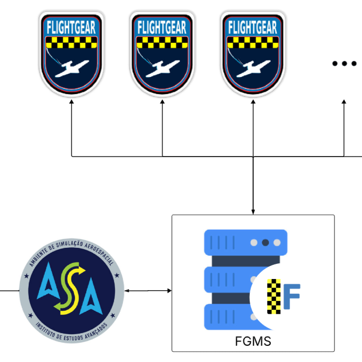
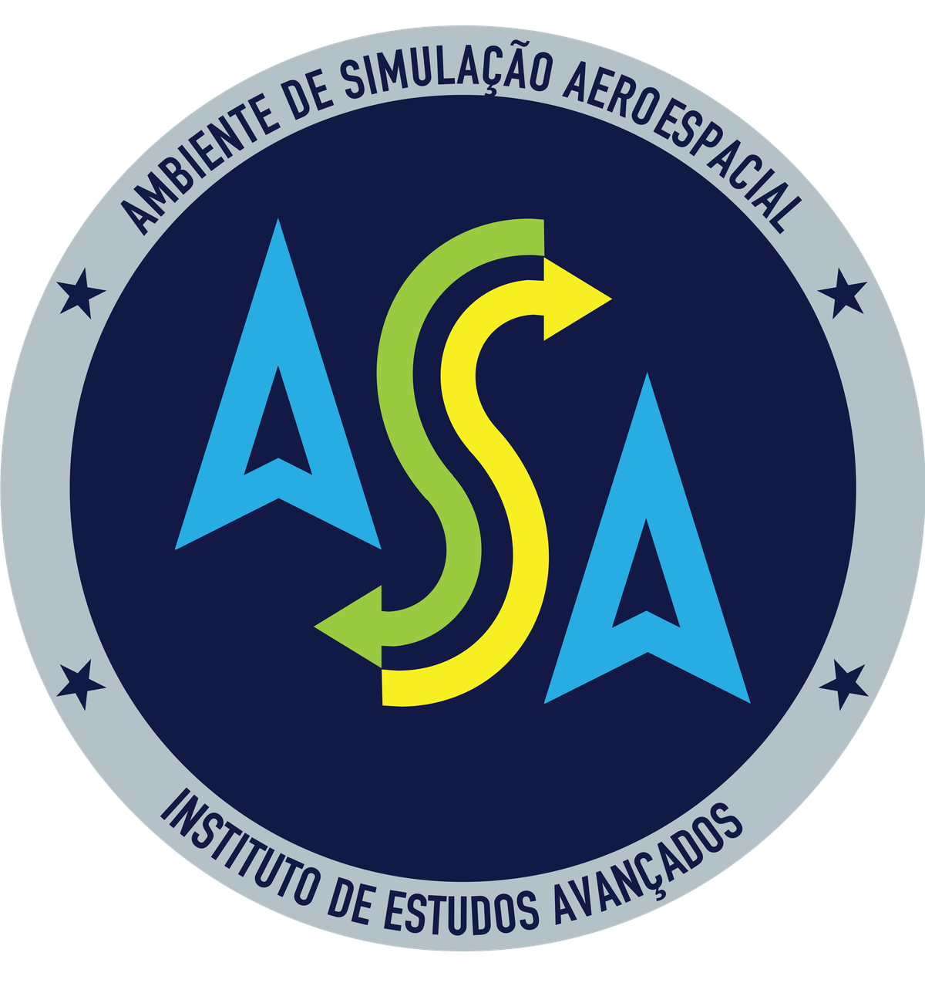
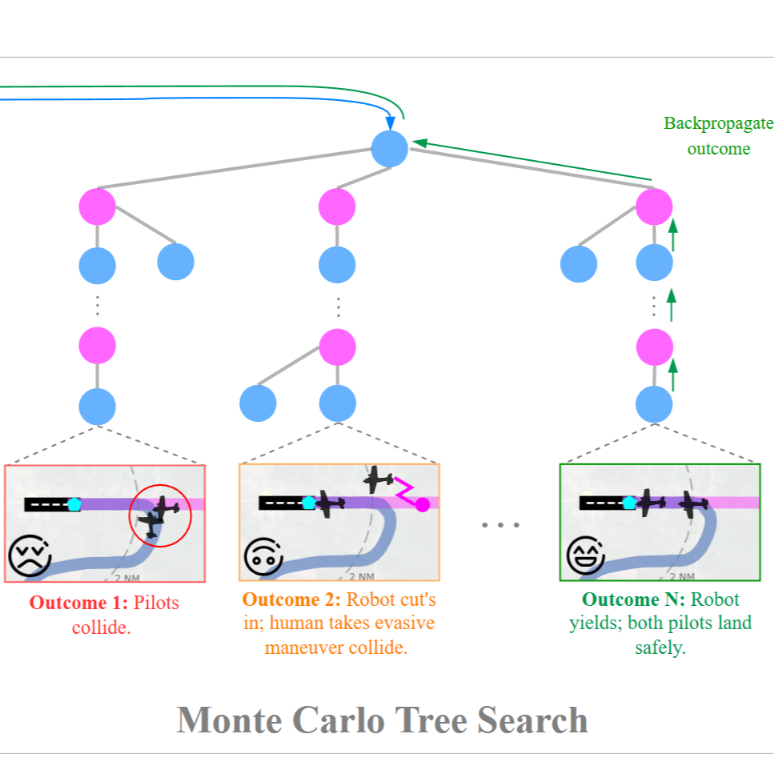
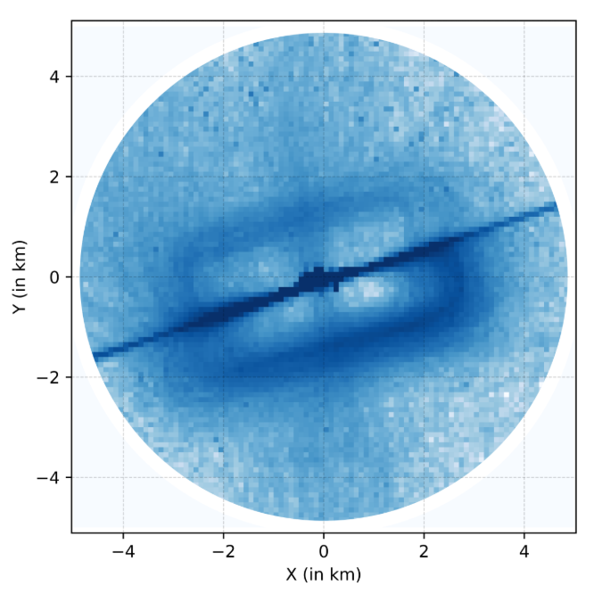

Software
Registrations

DroneSwarm2D: Simulador de Enxame de Drones Autônomos
National Institute of Industrial Property (INPI) Software Registration, 2025.

AsaGym: Biblioteca para Aprendizado por Reforço em Cenários Aeroespaciais
National Institute of Industrial Property (INPI) Software Registration, 2025.

AsaFG: Módulo de Integração Humano-Máquina para Simulações de Combate Aéreo
National Institute of Industrial Property (INPI) Software Registration, 2025.

ASA: Ambiente de Simulação Aeroespacial
National Institute of Industrial Property (INPI) Software Registration, BR 51
2024 002174-4, 2024.

AI Pilot: Close-Proximity Safe and Seamless Operation of Manned and Unmanned
Aircraft in Shared Airspace
Carnegie Mellon University (CMU) Technology Transfer Registration, 2023-102,
2023.
Open-Source

Large-scale datasets for terminal airspace operations, 2025.

Open-source repository for aerospace data processing and visualization, 2024.